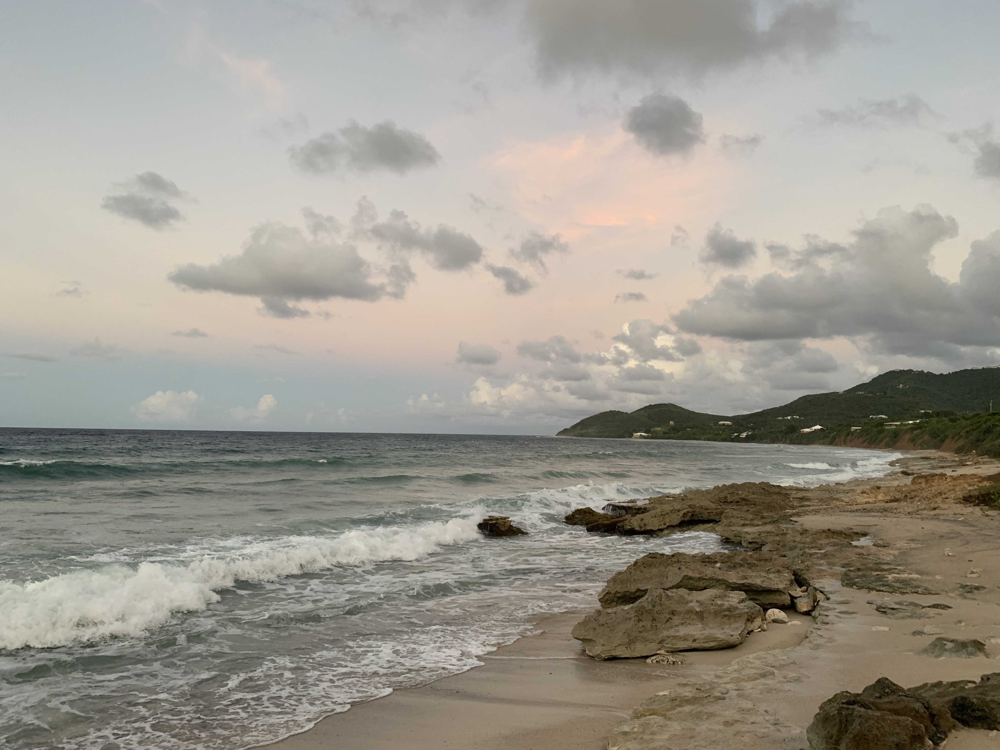
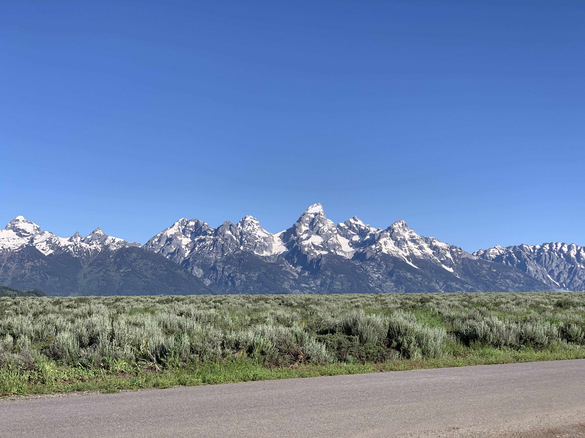
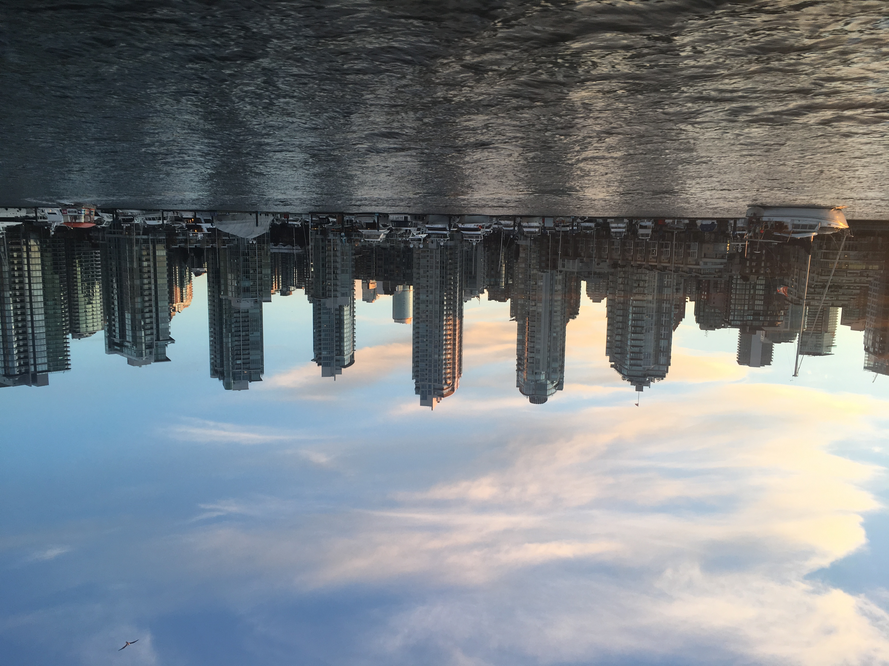
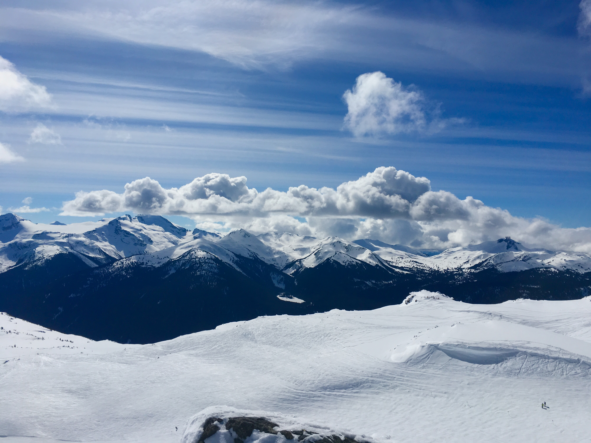

Travel
St. Croix
St. Croix, the largest of the U.S. Virgin Islands, is a Caribbean paradise that enchants visitors with its pristine beaches, rich history, and vibrant culture. This tropical gem boasts powdery white sands, crystal-clear waters, and coral reefs that make it a haven for snorkeling and diving enthusiasts. Its colonial past is evident in the charming architecture of Christiansted and Frederiksted, where cobblestone streets and historic forts transport you back in time. The island's unique fusion of Danish, African, and Caribbean influences is celebrated in its delicious cuisine, lively festivals, and the warm hospitality of its residents. Whether you're exploring the depths of Buck Island Reef National Monument, savoring local cuisine at a seaside restaurant, or simply soaking up the sunshine, St. Croix is a captivating destination that promises an unforgettable Caribbean experience.
Yellowstone


Geographical Location: North America
Yellowstone is the first national park in the United States. It covers over 2.2 million acres, and provides an opportunity to see wildlife and explore geothermal areas. In fact, Yellowstone contains about half the world's active geysers.
These unique opportunities also bring out a lot of bad decisions among the tourists. Every year visitors injure themselves or the wildlife by getting close to the animals. You can see examples of people making bad decisions by visiting Yellowstone National Park: Invasion of the Idiots, Tourons of Yellowstone, or Cowboy State Daily.


Grand Teton National Park
Teton National Park, nestled in the heart of the Rocky Mountains, is a breathtaking haven for nature enthusiasts and outdoor adventurers alike. Towering peaks, pristine lakes, and dense forests paint a stunning backdrop for exploration. During the winter months, visitors can revel in the thrill of skiing and snowboarding at the renowned Jackson Hole Resort, where powdery slopes and breathtaking vistas come together to create an unforgettable alpine experience.
Whether you're an avid skier or simply seeking solace in the serene beauty of nature, Teton National Park offers a year-round escape into the wild, promising memories that will last a lifetime.
Linz, Austria
Linz, Austria's charming third-largest city, is a captivating blend of rich history and contemporary vibrancy. Nestled along the picturesque banks of the Danube River, Linz boasts a stunning cityscape where historic architecture meets modern innovation. The city's cultural scene thrives, with numerous museums, galleries, and theaters showcasing art, music, and theater. Linz is also celebrated for its culinary delights, from traditional Austrian cuisine to international flavors.
The charming Old Town, with its narrow alleys and medieval charm, invites leisurely strolls, while the Ars Electronica Center, a hub of technological exploration, represents Linz's forward-looking spirit. Whether you're drawn to its historic treasures or its cutting-edge creativity, Linz is a captivating destination that seamlessly blends tradition and progress.
`Vancouver, Canada
Vancouver, Canada's jewel on the Pacific Coast, is a city of extraordinary natural beauty and cultural diversity. Nestled between the ocean and the Coast Mountains, Vancouver offers a stunning backdrop of snow-capped peaks and lush rainforests. Its multicultural character is reflected in vibrant neighborhoods like Chinatown and Gastown, where you can savor world-class cuisine and explore historic streets. Stanley Park, a lush urban oasis, provides a sanctuary for outdoor enthusiasts, while Granville Island's bustling market and artisan shops offer a taste of local culture. Vancouver's commitment to sustainability and environmental conservation is evident in its clean streets and green initiatives. Whether you're admiring the skyline from the seawall, hitting the slopes in winter, or simply enjoying the friendly atmosphere, Vancouver is a city that seamlessly harmonizes urban living with the wonders of nature.
Whistler Blackcomb
Whistler Blackcomb Ski Resort, nestled in the Coast Mountains of British Columbia, is a legendary winter wonderland for snow enthusiasts from around the globe. Boasting two colossal mountains, Whistler and Blackcomb, it offers the largest ski area in North America, with an impressive array of trails catering to all skill levels. The resort's charming alpine village, with its cobblestone streets and cozy chalets, exudes a warm, welcoming atmosphere. From thrilling downhill runs and terrain parks to serene cross-country trails and snowshoeing adventures, Whistler Blackcomb is a haven for outdoor adventure year-round. During the summer months, it transforms into a playground for mountain biking, hiking, and golf. With breathtaking vistas, top-notch amenities, and a vibrant après-ski scene, it's no wonder Whistler Blackcomb is a world-class destination for both winter sports and summer exploration.
Text generated with ChatGPT. Prompts asked for paragraph about pets, given there names and general attidtudes.